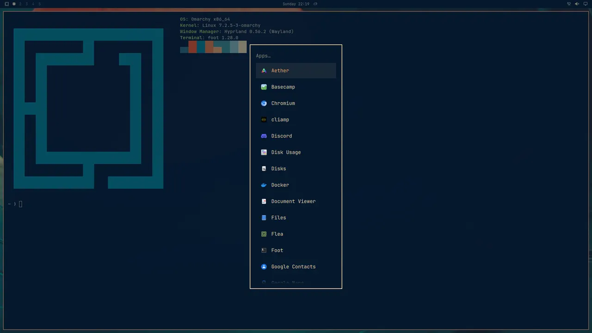
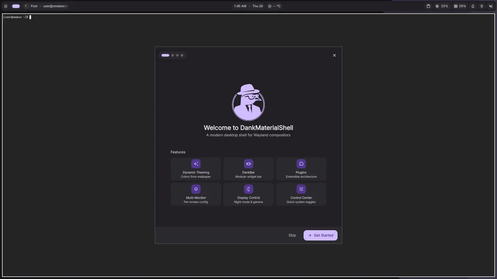

<style>
/* /desktops: the three desktops a box can be (Omarchy's, plain Hyprland, your own), where each runs,
   and what only Omarchy has (the bar, themes, a clean Omarchy, its checkout, the bar widget). It
   replaces /omarchy and /next; /omarchy lands on #omarchy. */
.who, .card p.who { font: 500 11.5px/1.4 var(--mono); letter-spacing: .12em; text-transform: uppercase; color: var(--muted); }
.who.f, .card p.who.f { text-transform: none; letter-spacing: .04em; }
.card.key { --fc: rgb(158 206 106 / .45); }
.card ul { margin: 0; padding-left: 18px; display: grid; gap: 7px; color: var(--ink-2); font-size: 15px; }
.card h3 a { color: inherit; text-decoration: none; }
/* the three desktops, up top */
.kinds { margin-top: 36px; }
.kinds .card > .in { height: 100%; grid-template-rows: auto auto 1fr auto auto; }
.kinds .runs { font: 400 12.5px/1.55 var(--mono); color: var(--ink-2); border-top: 1px solid var(--line); padding-top: 12px; }
.kinds .runs b { color: var(--box); font-weight: 500; }
.kinds .code { white-space: pre-wrap; overflow-wrap: anywhere; }
/* a section's own blocks, under its h2 */
.sub { padding-top: 64px; scroll-margin-top: 70px; }
.sub > h3 { font-size: clamp(22px, 2.2vw, 28px); margin: 12px 0 12px; }
.sub > h3 i { font-style: normal; color: var(--ink-2); }
.sub > .lead { margin-bottom: 22px; }
.ws img { width: 100%; }
.ws figcaption { font: 400 12px/1.5 var(--mono); color: var(--muted); padding: 10px 14px; border-top: 1px solid var(--line); }
/* Omarchy: their logo, our mark */
.ohead { display: grid; grid-template-columns: minmax(0, 1.15fr) minmax(0, .85fr); gap: 28px 56px; align-items: center; }
.ohead > * { min-width: 0; }
.ohead .lead { margin-top: 14px; }
@media (max-width: 900px) { .ohead { grid-template-columns: minmax(0, 1fr); } }
.omastage { margin: 0; border-radius: 18px; border: 1px solid var(--line-2); background: radial-gradient(70% 90% at 50% 40%, rgb(158 206 106 / .10), transparent 70%), #10111a; padding: 34px 26px 22px; display: grid; gap: 18px; justify-items: center; box-shadow: 0 30px 60px -30px rgb(0 0 0 / .8); }
.omastage .pair2 { display: flex; align-items: center; gap: 14px; font: 500 12px/1 var(--mono); letter-spacing: .16em; text-transform: uppercase; color: var(--sky); }
.omastage .omm { width: 30px; height: 30px; color: var(--box); filter: drop-shadow(0 0 12px var(--box-glow)); }
.omastage .omlogo { width: min(340px, 100%); height: auto; color: var(--ink); filter: drop-shadow(0 0 22px rgb(214 220 255 / .18)); }
.ver45 { display: flex; flex-wrap: wrap; gap: 10px; margin-top: 18px; }
.ver45 span { font: 500 12px/1 var(--mono); letter-spacing: .08em; padding: 8px 12px; border-radius: 999px; border: 1px solid var(--line-2); background: var(--s1); color: var(--ink-2); }
.ver45 span.on { border-color: rgb(158 206 106 / .5); color: var(--box); }
.ver45 span.old { border-style: dashed; color: var(--muted); }
/* your bar: the cards beside a box's launcher; plain and desk use the same two columns */
.bar2 { display: grid; gap: 14px; grid-template-columns: minmax(0, 1fr); }
@media (min-width: 1080px) { .bar2 { grid-template-columns: minmax(0, 1fr) minmax(0, 1fr); align-items: start; } .bar2 > .side { position: sticky; top: 84px; } }
.bar2 .stack, .bar2 .side { display: grid; gap: 14px; min-width: 0; }
/* a clean Omarchy: the magenta desk, the frozen clock */
.clean { display: grid; gap: 14px; grid-template-columns: minmax(0, 1fr); align-items: center; }
@media (min-width: 900px) { .clean { grid-template-columns: minmax(0, 1fr) minmax(0, 1fr); } }
.cdesk { aspect-ratio: 16 / 9; display: grid; grid-template-rows: auto 1fr; }
.cdesk .dbar { color: var(--ink-2); }
.cdesk .wall { position: relative; background: #ff00ff; }
.cdesk .win { position: absolute; left: 8%; top: 12%; width: 56%; height: 70%; border-radius: 8px; border: 1px solid var(--line-2); background: #1a1b26; display: grid; place-items: center; font: 500 12px/1.4 var(--mono); color: var(--ink-2); text-align: center; padding: 10px; }
.cdesk .hole { position: absolute; left: 70%; top: 30%; width: 22%; height: 40%; border-radius: 8px; border: 1px dashed #fff; display: grid; place-items: center; font: 500 11px/1.3 var(--mono); color: #fff; text-align: center; }
/* plain: where it runs */
.dist, .card ul.dist { list-style: none; margin: 0; padding: 0; display: flex; flex-wrap: wrap; gap: 8px; }
.dist li { font: 500 12px/1.2 var(--mono); letter-spacing: .04em; padding: 8px 12px; border-radius: 999px; border: 1px solid rgb(158 206 106 / .45); color: var(--box); background: rgb(158 206 106 / .05); }
.dist.not li { border: 1px dashed rgb(255 255 255 / .22); color: var(--muted); background: none; }
.small { font-size: 14px !important; color: var(--muted) !important; }
#tell .btn { height: auto; min-height: 48px; padding-block: 12px; line-height: 1.3; }

/* the bar widget: a working copy of its panel */
/* the bar widget: a working copy of its panel */
.watch { display: grid; gap: 22px; grid-template-columns: minmax(0, 1fr); }
@media (min-width: 1080px) { .watch { grid-template-columns: minmax(0, .8fr) minmax(0, 1.2fr); align-items: start; } .watch > :last-child { position: sticky; top: 84px; } }
.watch > * { min-width: 0; }
.wd { position: relative; min-height: 520px; border-radius: 16px; background: radial-gradient(90% 70% at 70% 10%, #1b2033, #10111a 70%); border: 1px solid var(--line-2); overflow: hidden; font: 12px/1.4 var(--mono); box-shadow: 0 40px 80px -30px rgb(0 0 0 / .7); }
.wd-bar { height: 32px; display: flex; align-items: center; gap: 12px; padding: 0 12px; background: rgb(0 0 0 / .35); border-bottom: 1px solid var(--line); color: var(--muted); }
.wd-bar > svg { width: 13px; height: 13px; color: var(--ink-2); }
.wd-bar .wsn { display: flex; gap: 9px; }
.wd-bar .wsn b { color: var(--ink); font-weight: 500; }
.wd-bar .clock { margin: 0 auto; }
.wbtn { display: flex; align-items: center; gap: 5px; background: none; border: 0; border-radius: 6px; padding: 3px 7px; color: var(--box); font: inherit; }
.wbtn[aria-expanded="true"] { background: var(--s3); }
.wbtn svg { width: 14px; height: 14px; }
.panel { position: absolute; right: 10px; top: 42px; width: min(420px, calc(100% - 20px)); border-radius: 14px; background: var(--s1); border: 1px solid var(--blue); box-shadow: 0 20px 50px rgb(0 0 0 / .55); padding: 14px; display: grid; gap: 12px; z-index: 2; }
.panel:focus { outline: none; }
.panel:focus-visible { box-shadow: 0 0 0 2px var(--amber); }
.phead { display: flex; align-items: center; gap: 10px; }
.phead svg { width: 26px; height: 26px; color: var(--ink); flex: 0 0 auto; }
.phead h4 { margin: 0; font: 600 14px var(--sans); color: var(--ink); }
.phead small { display: block; font: 10.5px var(--mono); letter-spacing: .08em; text-transform: uppercase; color: var(--muted); }
.phead .sp { margin-left: auto; }
.ib { background: none; border: 1px solid transparent; border-radius: 6px; color: var(--muted); padding: 3px 7px; }
.ib:hover { color: var(--ink); border-color: var(--line-2); }
.ib.on { color: var(--warn); }
.ib.slot { visibility: hidden; }   /* every row has its buttons in the same places */
.rows { display: grid; gap: 4px; max-height: 236px; overflow-y: auto; overscroll-behavior: contain; scrollbar-width: thin; scrollbar-color: var(--line-2) transparent; }
.row { display: flex; align-items: center; gap: 8px; padding: 8px 10px; border-radius: 9px; border: 1px solid transparent; cursor: pointer; }
.row > div { min-width: 0; }
.row[aria-selected="true"] { background: var(--s2); border-color: var(--line-2); }
.row .nm { color: var(--ink); overflow: hidden; text-overflow: ellipsis; white-space: nowrap; }
.row .meta { color: var(--muted); font-size: 11px; }
.row .meta b { color: var(--amber); font-weight: 400; }
.row .acts { margin-left: auto; display: flex; gap: 2px; flex: 0 0 auto; }
.row .armed { color: var(--warn); border-color: var(--warn); }
.newbtn { width: 100%; background: none; border: 1px solid var(--line-2); border-radius: 9px; padding: 8px; }
.newbtn:hover { border-color: var(--blue); }
.keys { color: var(--muted); font-size: 11px; text-align: center; }
.status { min-height: 1.4em; color: var(--box); font-size: 11.5px; overflow-wrap: anywhere; }
.setting { display: grid; grid-template-columns: minmax(0, 1fr) auto; gap: 4px 12px; align-items: center; padding-block: 6px; border-bottom: 1px solid var(--line); }
.setting b { color: var(--ink); font-weight: 500; }
.setting span { color: var(--muted); font-size: 11px; grid-column: 1; }
.setting select, .toggle { grid-row: 1 / span 2; grid-column: 2; }
.setting select { max-width: 150px; background: var(--well); color: var(--ink); border: 1px solid var(--line-2); border-radius: 6px; font: inherit; padding: 4px; }
.toggle { width: 38px; height: 20px; border-radius: 999px; border: 1px solid var(--line-2); background: var(--well); position: relative; padding: 0; }
.toggle::after { content: ""; position: absolute; top: 3px; left: 3px; width: 12px; height: 12px; border-radius: 50%; background: var(--muted); transition: transform .15s; }
.toggle[aria-checked="true"]::after { transform: translateX(18px); background: var(--box); }
.pwin { position: absolute; left: 10px; bottom: 10px; width: min(330px, 58%); border-radius: 10px; overflow: hidden; border: 1px solid var(--box); background: var(--s1); box-shadow: 0 0 30px rgb(158 206 106 / .12); z-index: 1; }
.pwin .tt { height: 22px; display: flex; justify-content: space-between; gap: 8px; padding: 0 8px; align-items: center; background: rgb(158 206 106 / .9); color: #0b0c13; font-size: 11px; white-space: nowrap; overflow: hidden; }
.pwin.iw { border-color: var(--blue); }
.pwin.iw .tt { background: var(--blue); }
.pwin img { width: 100%; aspect-ratio: 16 / 9; object-fit: cover; }
.hint { position: absolute; left: 12px; bottom: 12px; max-width: 44%; color: var(--muted); font-size: 11.5px; }
@media (max-width: 560px) { .wd { min-height: 640px; } .row { flex-wrap: wrap; } .row > div { flex: 1 1 100%; } .row .acts { margin-left: -7px; } .rows { max-height: 300px; } .panel { top: 42px; } .pwin { width: calc(100% - 20px); } .hint { max-width: calc(100% - 24px); } }
</style>
<main class="wrap">
  <section class="page">
    <div class="head">
      <p class="tag">Desktops</p>
      <h1>Any Hyprland. <i>Fullest on Omarchy.</i></h1>
      <p class="lead">A box is one of three desktops. omabox picks the first one that fits your machine; you can ask for any.
        Whichever it is, the box is invisible, its own, and gone with the agent.</p>
    </div>
    <div class="grid3 kinds">
      <div class="card key"><div class="in">
        <p class="who">An Omarchy box</p>
        <h3><a href="#omarchy">Omarchy's own desktop</a></h3>
        <p>Omarchy's Hyprland config and shell (bar, menu, tray, notifications), with your theme, bar layout and terminal
          settings.</p>
        <p class="runs"><b>Runs on</b> Omarchy 4.5. The default there.</p>
        <pre class="code"><span class="p">$ </span>omabox up</pre>
      </div></div>
      <div class="card"><div class="in">
        <p class="who">A plain box</p>
        <h3><a href="#plain">Hyprland, nothing more</a></h3>
        <p>Hyprland on a small config of omabox's: its defaults, your keyboard layout, a terminal on <kbd>SUPER</kbd> +
          <kbd>RETURN</kbd>. Your shell as its bar, if you want one.</p>
        <p class="runs"><b>Runs on</b> Arch, Fedora 45, Debian sid, openSUSE Tumbleweed. On Omarchy too, for an app that must
          not depend on it.</p>
        <pre class="code"><span class="p">$ </span>omabox up --shell 'dms run'
<span class="p">$ </span>omabox up --desktop plain</pre>
      </div></div>
      <div class="card"><div class="in">
        <p class="who">Your own desk</p>
        <h3><a href="#desk">Your desktop, copied in</a></h3>
        <p>Your Hyprland config, your shell (DMS, Noctalia, Caelestia, Waybar, a Quickshell config) and your wallpaper, in a
          box. Your session never knows.</p>
        <p class="runs"><b>Runs on</b> any of the above, with a Lua <code>hyprland.lua</code>.</p>
        <pre class="code"><span class="p">$ </span>omabox up --desktop desk</pre>
      </div></div>
    </div>
    <p class="note">Every box needs Hyprland 0.56 or later with its Lua config, and a GPU (AMD, Intel or NVIDIA). The same
      commands drive all three: <code>run</code>, <code>shot</code>, <code>keys</code>, <code>click</code>, <code>tree</code>,
      <code>wait</code>, <code>record</code>. <a href="install.html">Install</a></p>
  </section>

  <section class="grp" id="omarchy" data-rail="omarchy">
    <div class="ohead">
      <div>
        <p class="tag">An Omarchy box</p>
        <h2 style="margin-top:14px">Born on Omarchy, <i>fullest there.</i></h2>
        <p class="lead">omabox started as a way to test Omarchy plugins without touching the bar you work in. On Omarchy, a box
          is Omarchy, and everything in this section is Omarchy's alone: your bar, your theme, a clean Omarchy for checks,
          Omarchy's own checkout, and the widget in your bar.</p>
        <div class="ver45"><span class="on">Omarchy 4.5</span><span class="old">Omarchy 4.0 · deprecated</span><span>special:omabox</span></div>
        <p class="caption">Omarchy 4.5 is supported. 4.0 still works but is deprecated: omabox drops it in its first release
          after 2026-12-04, a month after 4.5 reached Omarchy's stable channel. <code>omarchy update</code> brings 4.5.</p>
      </div>
      <figure class="omastage"><div class="pair2"><svg class="omm" viewBox="0 0 15 15" aria-label="omabox"><use href="#m"/></svg><span>on</span></div><svg fill="none" class="omlogo" role="img" aria-label="Omarchy" viewBox="0 0 1215 285" xmlns="http://www.w3.org/2000/svg"><g fill="currentColor"><path clip-rule="evenodd" d="m720 120h-15v15h-14.998v14.999l-60.002.001v15.002l90-.002v.002h.002l-.002 89.998h-15v15h-13v15h-17v-89.998h-45v90l-45-.002v-89.998h-14.998v-30h14.998v-15.002h-14.998v-30.001h14.998v-75h15v-14.997h15v-15.002h105.002zm-90-.001h45v-74.997h-45z" fill-rule="evenodd"/><path clip-rule="evenodd" d="m105 30.002h15v14.997h15v180.001h-15v15h-15v15.002h-75v-15.002h-15v-15h-15v-180.001h15v-14.997h15v-15.002h75zm-60 194.998h45v-179.998h-45z" fill-rule="evenodd"/><path d="m300 15h60v15h15v14.999h15v180.001h-15v15h-15v15h-15l-.004-209.998h-44.994v-.002h-.002v210.002h-45v-210h-44.998v179.997h-.002v30.003h-15v-15.002h-15v-15h-14.998v-180.001h14.998v-14.999h15v-15h60v-15h45z"/><path clip-rule="evenodd" d="m555 225h-15v15h-15v15h-15v-105.001l-44.998.001v105.002h-45.002v-105.002h-15v-30.001h15v-75h15.002v-14.997h15v-15.002h105zm-89.998-105.001h44.998v-74.997h-44.998z" fill-rule="evenodd"/><path d="m885 75h-15v15h-15v15h-15v-59.998h-45v179.998h45v-59.998h15v14.997h15v15.001h15v30h-15v15h-15v15.002l-105-.002v-210.001h14.998v-14.997h15.002v-15.002h105z"/><path d="m960 119.999h45v-104.999h15v15h15v14.999h15v75.001h15v15h-15v90h-15v15h-15v15h-15v-105h-45v105.002l-45-.002v-105h-30v-15h15v-15.001h15v-75h15v-14.997h15v-15.002h15z"/><path d="m1125 119.999h45v-104.999h15v15h15v15h15v180h-15v15h-15v15.002l-75-.002v-15h-15v-15h-15v-45.001h15v-14.997-.002h30v60h45v-75h-90v-105.001h15v-14.997h15v-15.002h15z"/></g></svg></figure>
    </div>

    <div class="sub" id="bar">
      <p class="tag">Plugins</p>
      <h3>Your bar, <i>in a box.</i></h3>
      <p class="lead">Check a plugin against the bar you really use, or alone in one that isn't yours. Your own bar never changes
        while you work.</p>
      <div class="bar2">
        <div class="stack">
          <div class="card key"><div class="in"><p class="who f">--desk-shell</p><h3>Your whole shell</h3>
            <p><code>up --desk-shell</code> brings every plugin in <code>~/.config/omarchy/plugins</code>, your
              <code>shell.json</code> as it is, and the files your plugins read. Never <code>api-keys.env</code>, nor anything
              named or holding a key, token, secret or password. <code>up</code> lists what went in and what didn't, and why.
              <a href="#desk">Your own desk</a> does this too, with your Hyprland config.</p>
            <pre class="code"><span class="p">$ </span>omabox up --desk-shell --plugin ~/code/myplugin  <span class="o"># yours wins</span></pre></div></div>
          <div class="card"><div class="in"><p class="who f">--plugin</p><h3>One plugin, in a bar that isn't yours</h3>
            <p><code>--plugin</code> mounts it read-only and says why the shell didn't load it: a manifest it refuses, a QML error.
              <code>--stock-bar</code> shows it in Omarchy's default bar, as most people will see it;
              <code>--no-seed extensions</code> starts it as a new Omarchy user, none of your plugins' settings.</p>
            <pre class="code"><span class="p">$ </span>omabox up --plugin ~/code/myplugin
<span class="p">$ </span>omabox restart-shell   <span class="o"># after each edit</span>
<span class="p">$ </span>omabox look plugin ~/code/myplugin --open</pre></div></div>
          <div class="card"><div class="in"><p class="who f">tree --layer</p><h3>Read the bar as text</h3>
            <p><code>tree --layer omarchy-bar</code> lists the text the box's shell draws, where on screen, so an agent reads a
              widget without a screenshot and <code>click --find</code> clicks it.</p>
            <pre class="code"><span class="p">$ </span>omabox tree --layer omarchy-bar</pre></div></div>
          <div class="card"><div class="in"><p class="who">With an agent</p><h3>Steps written for your desktop, done in a box</h3>
            <p>Your project's instructions say "link the plugin into <code>~/.config/omarchy/plugins</code>", "edit
              <code>shell.json</code>", "run <code>omarchy plugin add</code>". The omabox skill has the agent do each of them in
              its box instead: those are file writes, and your bar would change at once.</p></div></div>
        </div>
        <figure class="ws side" style="margin:0">
          <div class="ws-bar"><span class="dots"><i></i><i></i><i></i></span><span class="t">a box · Omarchy's launcher</span></div>
          
          <figcaption>A box is Omarchy: its own bar, launcher and theme. Taken in the box with <code>omabox shot</code>.</figcaption>
        </figure>
      </div>
    </div>

    <div class="sub" id="theme">
      <p class="tag">Themes</p>
      <h3>Your theme, <i>live.</i></h3>
      <div class="card key" style="max-width:820px"><div class="in">
        <p><code>--theme-dir</code> puts the theme you are editing in the box, every save with it; <code>--theme</code> starts a
          box on the theme you name, whatever your desktop is on. Both say what a person would notice: a key no fallback
          resolves, text too faint to read, a background too small or nearly one colour. <code>look theme</code> applies it and
          shoots the desktop and a terminal printing its palette.</p>
        <pre class="code"><span class="p">$ </span>omabox up --theme-dir ~/code/my-theme --theme my-theme
<span class="p">$ </span>omabox run -- omarchy-theme-set my-theme   <span class="o"># after an edit</span>
<span class="p">$ </span>omabox look theme ~/code/my-theme</pre></div></div>
    </div>

    <div class="sub" id="clean">
      <p class="tag">Checks</p>
      <h3>A clean Omarchy, <i>for checks.</i></h3>
      <div class="clean">
        <div class="card"><div class="in">
          <p><code>up --clean</code>: Omarchy's bar on tokyo-night, a solid magenta wallpaper (any of it inside a window is a
            hole), the bar's clock frozen at Friday 12:00, English in UTC, no pointer, no network, no fonts of yours, no
            animations, and no name of yours (<code>user@omabox</code>). A baseline is the same image on every machine.
            <code>--keep</code> takes back what a test needs.</p>
          <pre class="code"><span class="p">$ </span>omabox up --clean
<span class="p">$ </span>omabox up --clean --keep fonts,pointer</pre>
          <a class="more" href="develop.html#check">Visual checks →</a></div></div>
        <div class="desk box cdesk" aria-hidden="true">
          <div class="dbar"><span class="wsn"><i class="on">1</i> <i>2</i> <i>3</i></span><span>Friday 12:00</span><span>tokyo-night</span></div>
          <div class="wall"><div class="win">your app<br>the only thing that moves</div><div class="hole">wallpaper here:<br>a hole</div></div>
        </div>
      </div>
    </div>

    <div class="sub" id="checkout">
      <p class="tag">Omarchy itself</p>
      <h3>Omarchy's own checkout <i>and stack.</i></h3>
      <div class="grid3">
        <div class="card key"><div class="in"><p class="who f">--omarchy</p><h3>Your checkout, never installed</h3>
          <p><code>up --omarchy DIR</code> runs a box on that tree's config, shell and scripts, as <code>omarchy dev link</code>
            would, without touching your system.</p>
          <pre class="code"><span class="p">$ </span>omabox up dev --omarchy ~/src/omarchy
<span class="p">$ </span>omabox hyprctl reload</pre></div></div>
        <div class="card"><div class="in"><p class="who f">--quickshell</p><h3>Your Quickshell build</h3>
          <p><code>up --quickshell PATH</code> runs the box's shell on a Quickshell build of yours.</p>
          <pre class="code"><span class="p">$ </span>omabox up --quickshell ~/code/quickshell/build/src/quickshell</pre></div></div>
        <div class="card"><div class="in"><p class="who">Binds and tests</p><h3>Omarchy's own binds work</h3>
          <p>Omarchy's binds are the box's: <kbd>SUPER</kbd> + <kbd>SHIFT</kbd> + <kbd>B</kbd> opens the browser in the box, not on
            your desktop.</p></div></div>
      </div>
    </div>

    <div class="sub" id="widget">
      <p class="tag">The bar widget</p>
      <h3>Every box, <i>from your bar.</i></h3>
      <div class="watch">
        <div class="card"><div class="in">
          <p>The omabox mark in your bar lists every box, with peek, screenshot and down for each, keys-to-box and the clipboard
            for an interactive one, and an orphan box (one nobody will take down) said on its row. On Omarchy 4.5 a box's windows can open on
            <code>special:omabox</code>, a workspace of omabox's own that the widget's Show opens.</p>
          <p data-md="skip">The copy here works: click a box, or focus the panel and use its keys. Its gear opens the settings.</p>
          <pre class="code"><span class="p">$ </span>omabox down --orphans</pre>
          <a class="more" href="how-it-works.html#inside">Peek and interactive boxes →</a></div></div>
        <div>
          <div class="wd">
            <div class="wd-bar"><svg aria-hidden="true"><use href="#m"/></svg><span class="wsn"><b>1</b><span>2</span><span>3</span><span>4</span><span>5</span></span><span class="clock">Sunday 22:19</span>
              <button class="wbtn" id="wbtn" type="button" aria-expanded="true" aria-controls="panel" title="omabox"><svg><use href="#m"/></svg><span id="count">4</span></button></div>
            <div class="panel" id="panel" tabindex="0" aria-label="omabox boxes. Keys: up and down to move, p peek or show, s shot, f keys to the box, v paste in, c copy out, d down, n new, r refresh"></div>
            <div id="spot"></div>
            <p class="hint" id="hint">Your desktop. The boxes are elsewhere, invisible, until you peek.</p>
          </div>
          <p class="caption" data-md="skip">A working copy of the widget's panel in omabox <span class="ver">1.5.3</span>. The boxes are made up;
            the screenshots are real.</p>
        </div>
      </div>
    </div>
  </section>

  <section class="grp" id="plain" data-rail="plain">
    <p class="tag">A plain box</p>
    <h2>Hyprland, <i>nothing of Omarchy's.</i></h2>
    <p class="lead">Since omabox 1.3, a box runs on any Hyprland. Where Omarchy isn't installed, <code>up</code> starts a plain
      box by itself and says so. On Omarchy, <code>--desktop plain</code> gives you one for an app that must not depend on
      Omarchy, and <code>config desktop plain</code> makes it every box's default.</p>
    <div class="bar2">
      <div class="stack">
        <div class="card key"><div class="in"><p class="who">What it has</p><h3>A small config, and your keyboard</h3>
          <p>Hyprland's defaults, your keyboard layout, <kbd>SUPER</kbd> + <kbd>RETURN</kbd> a terminal, <kbd>SUPER</kbd> +
            <kbd>W</kbd> closes a window. A HOME with git's name and email only. No bar, launcher, tray, notifications or
            wallpaper unless a shell brings them. Options that need Omarchy (<code>--plugin</code>, <code>--theme</code>,
            <code>--stock</code>) are refused, saying why.</p>
          <pre class="code"><span class="p">$ </span>omabox up                       <span class="o"># no Omarchy here</span>
<span class="p">$ </span>omabox up bare --desktop plain  <span class="o"># on Omarchy</span>
<span class="p">$ </span>omabox config desktop plain     <span class="o"># the default</span></pre></div></div>
        <div class="card"><div class="in"><p class="who f">--shell CMD</p><h3>Your shell as its bar</h3>
          <p><code>--shell</code> runs the shell you name in the box: <code>dms run</code>, <code>qs -p DIR</code>,
            <code>caelestia shell -d</code>. <code>up</code> waits until it draws, <code>log shell</code> is its output,
            <code>restart-shell</code> starts it again, and a crash is said as the shell's.</p>
          <pre class="code"><span class="p">$ </span>omabox up --shell 'dms run'
<span class="p">$ </span>omabox up --shell 'qs -p ~/my-shell' --ro-bind ~/my-shell</pre></div></div>
        <div class="card"><div class="in"><p class="who">Someone else's rice</p><h3>Try a shell without installing it</h3>
          <p>A Quickshell shell someone published runs from its own folder in a plain box, with no network unless you open it.
            You look at it with <code>shot</code> or <code>peek</code>; never run its install script. A box is not a security
            boundary: the shell's code can still start any process. <a href="safety.html">What a box holds, and what it
            doesn't</a>.</p>
          <pre class="code"><span class="p">$ </span>omabox up --desktop plain --net isolated \
    --shell 'qs -p /path/to/their/shell'</pre></div></div>
        <div class="card"><div class="in"><p class="who f">--hyprland DIR</p><h3>Another Hyprland, whole</h3>
          <p>A build folder, an install prefix or an unpacked package runs as the box's Hyprland, its own libraries and
            <code>hyprctl</code> with it. A box can run Hyprland 0.57 on a desktop that has 0.56.</p>
          <pre class="code"><span class="p">$ </span>omabox up patched --hyprland ~/code/Hyprland/build</pre>
          <a class="more" href="develop.html">Hyprland work →</a></div></div>
      </div>
      <div class="side">
        <figure class="ws" style="margin:0">
          <div class="ws-bar"><span class="dots"><i></i><i></i><i></i></span><span class="t">a plain box · DankMaterialShell</span></div>
          
          <figcaption>A plain box, <code>--shell 'dms run'</code>. A box is always a first run, so DankMaterialShell greets you.</figcaption>
        </figure>
        <div class="card"><div class="in"><p class="who">Where it's tested</p>
          <ul class="dist"><li>Arch without Omarchy</li><li>Fedora 45</li><li>Debian sid</li><li>openSUSE Tumbleweed</li></ul>
          <p>Each in a VM of its own, <code>install.sh</code> through to real boxes. Plain Arch runs the whole test suite, on a
            virtual GPU and on a real NVIDIA card. Fedora's Hyprland comes from a COPR; on Debian sid, Hyprland 0.57.0 drops every
            GPU app in a box (fixed in 0.57.1, and <code>omabox doctor</code> warns).</p>
          <p class="who" style="margin-top:6px">Not yet</p>
          <ul class="dist not"><li>NixOS</li><li>Ubuntu 26.04 LTS</li><li>Alpine</li><li>Void</li></ul>
          <p class="small">NixOS: a box looks for its programs in <code>/usr/bin</code>. Ubuntu 26.04, Alpine and Void ship no
            Hyprland with the Lua config.</p>
          <a class="more" href="install.html">Install →</a></div></div>
      </div>
    </div>
  </section>

  <section class="grp" id="desk" data-rail="your desk">
    <p class="tag">Your own desk</p>
    <h2>Your desktop, <i>in a box.</i></h2>
    <p class="lead">Since omabox 1.4, <code>--desktop desk</code> copies your Hyprland config, your shell and your look into a
      box, at your HOME's own path, so what names your paths finds them. Your agent tries a change to your binds, dotfiles or
      shell there first, and you look at it before it reaches your session.</p>
    <div class="grid2">
      <div class="card key"><div class="in"><p class="who">What's copied</p><h3>A copy, never your files</h3>
        <p>Your <code>~/.config/hypr</code>, the config and state of the shell you run, and the wallpapers they show. Links
          (stow, home-manager) are followed and copied as files, so nothing the box writes reaches yours. A link into a secret
          store, a secret's name, a file with a key's shape and what is over the caps stay out, and <code>up</code> says what
          it left out. The HOME is still a box's own: your <code>~/.ssh</code> is not there.</p>
        <pre class="code"><span class="p">$ </span>omabox up --desktop desk</pre></div></div>
      <div class="card"><div class="in"><p class="who">What runs</p><h3>Your config, through a policy</h3>
        <p>Your <code>hyprland.lua</code> runs as on your desk, your look, input and binds with it, and omabox's settings over
          it (the screen and monitors). What it starts goes through an autostart policy: idle and lock daemons, your systemd
          session and system-bus applets are dropped, the rest runs. Each decision is a line of <code>log autostart</code>. A
          <code>hyprland.conf</code> alone is refused.</p>
        <pre class="code"><span class="p">$ </span>omabox log autostart</pre></div></div>
      <div class="card"><div class="in"><p class="who">Your shell</p><h3>One shell, found for you</h3>
        <p>DMS, Noctalia, Caelestia, Waybar or a Quickshell config, found in what your config starts or by its systemd unit,
          runs as the box's shell; <code>up</code> says which. A second one is dropped. On an Omarchy desk the box is an
          Omarchy box running your config, with your plugins and <code>shell.json</code>.</p></div></div>
      <div class="card"><div class="in"><p class="who">Held awake</p><h3>No lock between two steps</h3>
        <p>Your shell's idle timeouts would lock or blank the box while an agent thinks. A desk box holds idle off, and turns
          the timeouts off in its copy where it knows how.</p>
        <p class="small">Refused for now: <code>--clean</code> (the path carries your login name), a jailed agent's desk box,
          <code>check run --desktop desk</code> (a check needs the same box every run) and <code>--net host</code>.</p></div></div>
    </div>
  </section>

  <section class="grp" id="tell" data-rail="tell us">
    <h2>A shell or distro <i>that doesn't work yet?</i></h2>
    <p class="lead">Tell us which, and what you'd want an agent to do with it.</p>
    <div class="ctas" style="margin-top:8px">
      <a class="btn solid" href="https://github.com/diogochaves/omabox/issues/new">Open an issue</a>
      <a class="more" href="uses.html#desk">What agents do with your desk →</a>
    </div>
  </section>

<script>
(() => {
  const $ = (s, r = document) => r.querySelector(s);
  const esc = s => String(s).replace(/[&<>]/g, c => ({ "&": "&amp;", "<": "&lt;", ">": "&gt;" }[c]));

  /* the widget: a working copy of its panel (plugin/Panel.qml) */
  const panel = $("#panel"), spot = $("#spot"), hint = $("#hint"), wbtn = $("#wbtn"), count = $("#count");
  let wboxes = [
    { name: "app-tray-5cc72cdc", mode: "headless", size: "1920x1080", age: "2m", shot: "term" },
    { name: "app-menu-9f01d2e4", mode: "headless", size: "3 monitors", age: "6m", shot: "menu" },
    { name: "app-keyring-3b7a6c11", mode: "headless", size: "1920x1080", age: "12m", shot: "desk" },
    { name: "site-look-41c09e7a", mode: "headless", size: "1920x1080", age: "1h 40m", shot: "desk", orphan: true },
  ];
  let sel = 0, face = "boxes", status = "", armed = null, armedAt = 0, newAt = 0, peeking = null, newN = 1;
  const cfg = { workspace: "9", confirm: false, always: true };
  const shotOf = b => b.mode === "interactive" ? "media/interactive.webp" : b.shot === "term" ? "media/term-tokyo-night.webp" : b.shot === "menu" ? "media/menu.webp" : "media/desktop.webp";
  const where = () => cfg.workspace === "special:omabox" ? "its own special workspace (Show opens it)" : "workspace " + cfg.workspace;
  const slot = icon => `<button class="ib slot" type="button" tabindex="-1" aria-hidden="true">${icon}</button>`;
  const wsOpts = [...Array.from({ length: 10 }, (_, i) => [String(i + 1), "Workspace " + (i + 1)]), ["special:omabox", "Its own (special:omabox)"]];
  function stamp() { const d = new Date(), z = n => String(n).padStart(2, "0"); return `${z(d.getHours())}${z(d.getMinutes())}${z(d.getSeconds())}-${String(d.getMilliseconds()).padStart(3, "0")}`; }
  function renderSpot() {
    const b = wboxes.find(x => x.name === peeking);
    if (!b) { spot.innerHTML = ""; hint.hidden = false; return; }
    hint.hidden = true; const iw = b.mode === "interactive";
    spot.innerHTML = `<div class="pwin ${iw ? "iw" : ""}"><div class="tt"><span>${iw ? b.name : "peek · " + b.name}</span><span>${iw ? "yours to drive" : "view only"}</span></div></div>`;
  }
  function render() {
    const keep = $(".rows", panel)?.scrollTop || 0;
    renderPanel();
    const rows = $(".rows", panel); if (rows) rows.scrollTop = keep;
  }
  function meta(b) {
    const p = [b.mode];
    if (b.mode !== "interactive") p.push(b.size);
    p.push(b.age);
    if (b.orphan) p.push("<b>orphan</b>");
    if (peeking === b.name) p.push(b.mode === "interactive" ? "shown" : "peeking");
    if (b.keys) p.push("keys follow focus");
    return p.join(" · ");
  }
  function renderPanel() {
    count.textContent = wboxes.length; wbtn.style.opacity = wboxes.length ? 1 : .55;
    if (face === "settings") {
      panel.innerHTML = `<div class="phead"><svg><use href="#m"/></svg><div><h4>Settings</h4><small>omabox ${$(".ver").textContent}</small></div><button class="ib sp" data-a="back" type="button">‹ Back</button></div>
        <div class="setting"><b>Where windows open</b><span>Interactive boxes and peek windows, never focused when they open. Its own: Show opens it, switching workspace hides it.</span><select id="wsel" aria-label="Where windows open">${wsOpts.map(([v, l]) => `<option value="${v}" ${v === cfg.workspace ? "selected" : ""}>${l}</option>`).join("")}</select></div>
        <div class="setting"><b>Confirm before closing</b><span>Closing an interactive box's window asks first; closing it again shuts the box down.</span><button class="toggle" role="switch" data-a="confirm" aria-checked="${cfg.confirm}" aria-label="Confirm before closing" type="button"></button></div>
        <div class="setting" style="border:0"><b>Always show in the bar</b><span>Off: the icon only while a box is up.</span><button class="toggle" role="switch" data-a="always" aria-checked="${cfg.always}" aria-label="Always show in the bar" type="button"></button></div>
        <div class="status" aria-live="polite">${esc(status)}</div>`;
      $("#wsel", panel).addEventListener("change", e => { cfg.workspace = e.target.value; status = `omabox config workspace ${e.target.value}`; render(); });
      return;
    }
    panel.innerHTML = `<div class="phead"><svg><use href="#m"/></svg><div><h4>Boxes</h4><small>${wboxes.length ? wboxes.length + (wboxes.length > 1 ? " boxes up" : " box up") : "No boxes up"}</small></div><button class="ib sp" data-a="settings" type="button" aria-label="Settings">⚙</button></div>
      <div class="rows" role="listbox" aria-label="Boxes">${wboxes.map((b, i) => `<div class="row" role="option" aria-selected="${i === sel}" data-i="${i}">
        <div><div class="nm">${b.name}</div><div class="meta">${meta(b)}</div></div>
        <span class="acts"><button class="ib" data-a="peek" data-i="${i}" type="button" title="${b.mode === "interactive" ? "Show" : "Peek"} (p)">◉</button>${b.mode === "interactive" ? `<button class="ib ${b.keys ? "on" : ""}" data-a="keys" data-i="${i}" type="button" title="SUPER keys follow focus and the pointer into it: ${b.keys ? "on" : "off"} (f)">⌨</button>` : slot("⌨")}<button class="ib" data-a="shot" data-i="${i}" type="button" title="Screenshot (s)">▣</button>${b.mode === "interactive" ? `<button class="ib" data-a="clip" data-i="${i}" type="button" title="Paste your clipboard into the box (v)">⇲</button><button class="ib" data-a="clipout" data-i="${i}" type="button" title="Copy the box's clipboard out (c)">⇱</button>` : slot("⇲") + slot("⇱")}<button class="ib ${armed === b.name ? "armed" : ""}" data-a="down" data-i="${i}" type="button" title="Down (d, twice)">✕</button></span></div>`).join("")}</div>
      <button class="newbtn" data-a="new" type="button">+ ${Date.now() - newAt < 3000 ? "Press n again to start one" : "New interactive box"}</button>
      <div class="keys">↑↓&nbsp;move · p&nbsp;peek/show · s&nbsp;shot · f&nbsp;keys · v&nbsp;paste&nbsp;in · c&nbsp;copy&nbsp;out · d&nbsp;down · n&nbsp;new · r&nbsp;refresh</div>
      <div class="status" aria-live="polite">${esc(status)}</div>`;
  }
  function act(a, i = sel) {
    const b = wboxes[i];
    if (a === "settings") { face = "settings"; status = ""; }
    else if (a === "back") { face = "boxes"; status = ""; }
    else if (a === "confirm" || a === "always") { cfg[a] = !cfg[a]; status = a === "confirm" ? `omabox config confirm-close ${cfg.confirm ? "on" : "off"}` : `omabox config bar-icon ${cfg.always ? "always" : "auto"}`; }
    else if (a === "refresh") status = "Refreshed: omabox ls --json";
    else if (a === "armnew") { newAt = Date.now(); status = ""; setTimeout(() => { if (Date.now() - newAt >= 3000) render(); }, 3050); }
    else if (a === "new") { newAt = 0; const name = `box-${newN++}`; wboxes.push({ name, mode: "interactive", size: "1280x720", age: "just now" }); sel = wboxes.length - 1; peeking = name; renderSpot(); status = `omabox up --interactive --new: '${name}' is a window on ${where()}`; }
    else if (!b) return;
    else if (a === "peek") { sel = i; peeking = b.name; renderSpot(); status = b.mode === "interactive" ? `Show: focused '${b.name}'` : `omabox: peek at box '${b.name}' on ${where()} (view only)`; }
    else if (a === "shot") { sel = i; status = `/tmp/omabox-${b.name}-${stamp()}.png (opened)`; }
    else if (b.mode !== "interactive" && (a === "keys" || a === "clip" || a === "clipout")) return;   // an interactive box's only, as in the real panel
    else if (a === "keys") { sel = i; b.keys = !b.keys; status = b.keys ? `omabox: box '${b.name}': SUPER keys go to it while its window has focus and the pointer is over it` : `omabox: box '${b.name}': SUPER keys are your desktop's again`; }
    else if (a === "clip") { sel = i; status = `omabox: handed text (text/plain;charset=utf-8, 23 bytes) from your clipboard to box '${b.name}'`; }
    else if (a === "clipout") { sel = i; status = `omabox: handed text (text/plain;charset=utf-8, 41 bytes) from box '${b.name}' to your clipboard`; }
    else if (a === "down") {
      sel = i;
      if (armed === b.name && Date.now() - armedAt < 400) return;   // a double-click is not a confirmation, as in the real panel
      if (armed === b.name && Date.now() - armedAt < 3000) { wboxes.splice(i, 1); armed = null; if (peeking === b.name) { peeking = null; renderSpot(); } sel = Math.max(0, Math.min(sel, wboxes.length - 1)); status = `omabox: box '${b.name}' down`; }
      else { armed = b.name; armedAt = Date.now(); status = `Press d again to take '${b.name}' down`; }
    }
    if (a !== "down") armed = null;
    render();
    if (a === "new") $(`.row[data-i="${sel}"]`, panel)?.scrollIntoView({ block: "nearest" });
  }
  panel.addEventListener("click", e => {
    const t = e.target.closest("[data-a]"); if (t) { act(t.dataset.a, t.dataset.i !== undefined ? +t.dataset.i : sel); return; }
    const r = e.target.closest(".row"); if (r) { sel = +r.dataset.i; armed = null; render(); }
  });
  panel.addEventListener("keydown", e => {
    if (e.target.tagName === "SELECT") return;
    const k = e.key;
    if (face === "settings") { if (k === "Escape") { act("back"); e.preventDefault(); } return; }
    const map = { p: "peek", Enter: "peek", s: "shot", f: "keys", v: "clip", c: "clipout", d: "down", r: "refresh", n: Date.now() - newAt < 3000 ? "new" : "armnew" };   // n twice, like the real panel
    if (k === "ArrowDown" || k === "j") { sel = Math.min(sel + 1, wboxes.length - 1); armed = null; render(); e.preventDefault(); }
    else if (k === "ArrowUp" || k === "k") { sel = Math.max(sel - 1, 0); armed = null; render(); e.preventDefault(); }
    else if (map[k]) { act(map[k]); e.preventDefault(); }
    $(`.row[data-i="${sel}"]`, panel)?.scrollIntoView({ block: "nearest" });
  });
  wbtn.addEventListener("click", () => { const open = panel.hidden; panel.hidden = !open; wbtn.setAttribute("aria-expanded", open); if (open) panel.focus(); });
  render();
})();
</script>
</main>
